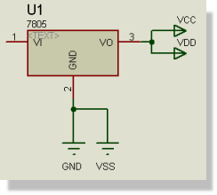

Many of the integrated circuits in the Device Libraries have hidden power pins. When the netlist generator encounters these, it creates a new net and assigns the name of the hidden pin to it. A 7400 gate will thus generate two power nets - VCC carrying pin 14 and GND carrying pin 7. Since all like-named nets are merged, all like-named pins will get connected together.

You can make further connections to these nets by placing name-donor objects (e.g. Logical Terminals) with the same name and then connecting off them. For example, to connect a resistor to VCC, you would place an unnamed Power Terminal (which automatically takes the name VCC) and then wire from that to the appropriate end of the resistor.
In some cases, you may want hidden power pins to connect to different nets from the pin name. This can be achieved by adding appropriately named user properties to the parts which carry the hidden power pin. For example, if attached to a 7400, the property
VCC = VCC1
would force pin 14 to be connected to VCC1. Note that in the case of a multi-element part such as a 7400, you must add the property to all the gates.
You can view and edit the net names assigned to the hidden pins of a component by clicking the Hidden Pins button on the Edit Component dialogue form.
Note that if you place several pins with the same name, and only some of them are hidden, then they will all be connected together, but not net name will be generated. Instead, they will be connected to the wiring attached to the visible pin(s).
Where your design contains components which have hidden power pins, it may not be immediately obvious what power nets have been created, and more importantly, whether these nets have been connected to the actual power supply rails within your design.
Fortunately, Proteus will detect any power nets which have not been connected to a power rail and report any such unbound power nets as an error during netlist compilation. You can then use the Power Rail Configuration dialogue form to specify appropriate bindings.
See Power Rail Configuration for more information.